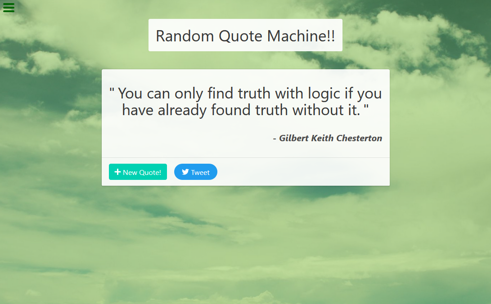
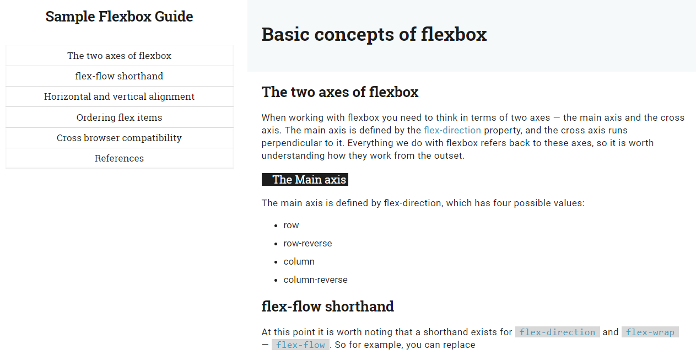
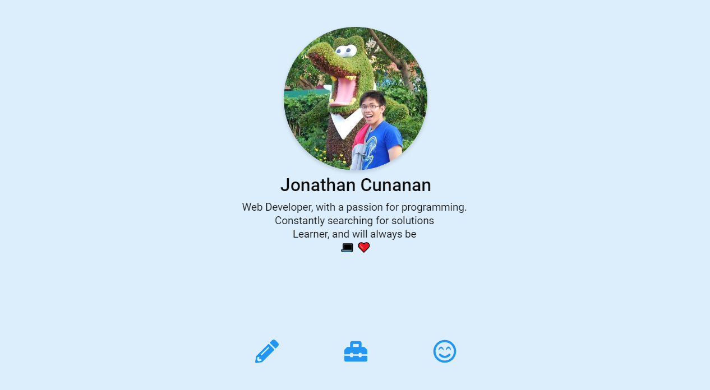

Jonathan Cunanan

Web Developer, with a passion for programming.
Constantly searching for solutions
Learner, and will always be
💻 ❤️
Projects
-
Random Quote Machine
This is project made to play with react. Had lots of fun making components, producing random colors, and keeping the data state in sync with the UI! Used CSS Framework called Bulma!
-
Technical Docs Challenge
CSS Responsive Web Design Challenge!! Had fun doing typography, making a mobile and desktop layout, all in pure CSS! Learned flexbox, visual hierarchy, and semantics!!
-
My Portfolio
Of course, where can I show my projects without this portfolio site!! Had an amazing time exploring new techonlogies like CSS grid, feature queries, also with a little bit of flexbox!
Tools that I have used!
-
CSS3

About Me
@jcunanan05
Hi, I'm Jonathan and I study web development and I like it so much! I am always excited about techonlogies in web!
<<<<<<< HEAD